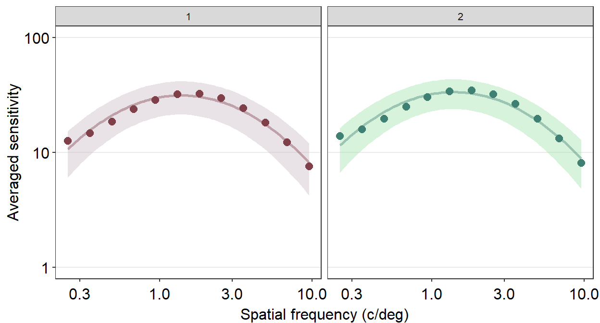

Chapter 14 Area under Curve, AULCSF and R2 of the CSF
As in the previous chapter, we will use data of achromatic contrast sensitivity from 51 normal observers from this paper (a subset of the entire dataset) and the smCSF package:
Kim, Y. J., Reynaud, A., Hess, R. F., & Mullen, K. T. (2017). A normative data set for the clinical assessment of achromatic and chromatic contrast sensitivity using a qCSF approach. Investigative ophthalmology & visual science, 58(9), 3628-3636.
Let’s load the necessary packages.
library(tidyverse)
library(smplot2)
library(smCSF)ACh <- read_csv('https://www.smin95.com/data_ACh.csv')head(ACh)## # A tibble: 6 x 4
## Subject Repetition SpatialFreq Sensitivity
## <chr> <dbl> <dbl> <dbl>
## 1 S1 1 0.25 23.8
## 2 S2 1 0.25 18.0
## 3 S3 1 0.25 14.2
## 4 S4 1 0.25 5.14
## 5 S5 1 0.25 16.0
## 6 S6 1 0.25 10.9There are four columns in this data frame:
First,
Subjectrefers to each participant. There are 51 participants total in the .csv file.Next,
Repetitionrefers to each repetition of the measurement The participants performed two repetitions of the contrast sensitivity measurement.SpatialFreqrefers to spatial frequency of the stimuli that were shown to test the observers’ contrast sensitivity. There are a total of 12 spatial frequencies.The
Sensitivitycolumn refers to the linear values of the contrast sensitivity.
14.1 Area under a Curve
Area under a curve under the contrast sensitivity function (CSF) as an index of visual performance or sensitivity. The higher the areal measure, the better the visual performance. There are two ways to calculate the area: 1) trapezoidal integration of the contrast sensitivity data as a function of spatial frequency, and 2) area under the fitted log CSF (AULCSF).
Let’s create a data frame ACh_avg that contains the averaged contrast sensitivity data for each repetition and spatial frequency across 51 subjects.
ACh_avg <- ACh %>%
group_by(Repetition, SpatialFreq) %>%
summarise(avgSens = mean(Sensitivity),
stdErrSens = sm_stdErr(Sensitivity),
stdDevSens = sd(Sensitivity))
ACh_avg## # A tibble: 24 x 5
## # Groups: Repetition [2]
## Repetition SpatialFreq avgSens stdErrSens stdDevSens
## <dbl> <dbl> <dbl> <dbl> <dbl>
## 1 1 0.25 12.6 0.743 5.31
## 2 1 0.35 14.7 0.777 5.55
## 3 1 0.49 18.6 0.993 7.09
## 4 1 0.68 23.7 1.22 8.71
## 5 1 0.94 28.7 1.36 9.68
## 6 1 1.31 32.0 1.40 9.99
## 7 1 1.83 32.4 1.43 10.2
## 8 1 2.54 29.6 1.39 9.93
## 9 1 3.54 24.3 1.22 8.70
## 10 1 4.93 18.1 0.960 6.85
## # i 14 more rowsAs in the previous chapter, lets store the data into proper data frames for each repetition.
ACh_avg$Repetition <- factor(ACh_avg$Repetition) # factor
ACh_avg1 <- ACh_avg %>% filter(Repetition == 1) # repetition 1
ACh_avg2 <- ACh_avg %>% filter(Repetition == 2) # repetition 2Here is an example of trapezoidal integration of the contrast sensitivity function (i.e., AUC). AUC is an abbreviation of area under a curve from trapezoidal integration.
ACh_avg2 %>% ggplot(aes(x = SpatialFreq, y = avgSens)) +
geom_area(fill = sm_color('lightgreen'), alpha = 0.5) +
geom_point(color = sm_color('viridian')) +
geom_line(color = sm_color('viridian')) +
sm_hgrid() +
xlab('Spatial frequency (c/deg)') +
ylab('Averaged sensitivity') +
ggtitle('Repetition 2 (n=51)') +
scale_x_continuous(trans = 'log10') +
scale_y_continuous(trans = 'log10') +
scale_y_log10(limits = c(1,100)) +
annotate('text', x = 0.6, y = 1.3, label = 'Trapezoidal AUC')
Here is an example of the AULCSF.
ACh_avg2 %>% ggplot(aes(x = SpatialFreq, y = avgSens)) +
sm_areaCSF(fill = sm_color('lightgreen'), alpha = 0.5) +
sm_CSF(color = sm_color('viridian'), size = .8) +
geom_point(color = sm_color('viridian')) +
sm_hgrid() +
xlab('Spatial frequency (c/deg)') +
ylab('Averaged sensitivity') +
ggtitle('Repetition 2 (n=51)') +
scale_y_log10(limits = c(1,100)) +
annotate('text', x = 0.4, y = 1.3, label = 'AULCSF')Notice that these that AUC and AULCSF are slightly different. AUC denotes the area that is enclosed by the lines that connect each point. AULCSF refers to the area that is enclosed by the fitted contrast sensitivity function. The astute reader may realize that if the fit of the contrast sensitivity function is poor, then the AULCSF might not be accurate. Hence, it might be necessary to prove that the CSF fit is robust with the given data. To avoid these hassles, some researchers use AUC instead. Nevertheless, smCSF offers functions that compute both AUC and AULCSF.
The higher the AUC and AULCSF are, the higher the overall sensitivity of the observer. Therefore, when potential treatment is being studied, it is of interest to see an increase in AUC and AULCSF in the visually impaired after their treatment.
14.2 sm_trapz(), sm_AULCSF() and sm_r2()
This section is identical to what we have seen in Chapter 6. For those who have read Chapter 6, the only difference is that these AUCs should be in log scales (both x and y scales) in the context of contrast sensitivity.
Recall that ACh_avg contains averaged contrast sensitivity for each spatial frequency across 51 observers for the first repetition.
ACh_avg ## # A tibble: 24 x 5
## # Groups: Repetition [2]
## Repetition SpatialFreq avgSens stdErrSens stdDevSens
## <fct> <dbl> <dbl> <dbl> <dbl>
## 1 1 0.25 12.6 0.743 5.31
## 2 1 0.35 14.7 0.777 5.55
## 3 1 0.49 18.6 0.993 7.09
## 4 1 0.68 23.7 1.22 8.71
## 5 1 0.94 28.7 1.36 9.68
## 6 1 1.31 32.0 1.40 9.99
## 7 1 1.83 32.4 1.43 10.2
## 8 1 2.54 29.6 1.39 9.93
## 9 1 3.54 24.3 1.22 8.70
## 10 1 4.93 18.1 0.960 6.85
## # i 14 more rowsTo compute the trapezoidal AUC, we can use the function sm_trapz().
sm_trapz(ACh_avg1$SpatialFreq, ACh_avg1$avgSens)## [1] 2.081833The difference between sm_trapz() and sm_auc() is that sm_trapz() automatically converts the x and y vectors into log10 scales. This default can be overcome when logXY = FALSE. When, logXY = FALSE, sm_trapz() becomes identical to sm_auc(). sm_trapz() has been created as a separate function to create a convenient and straightforward workflow for those who wish to analyze the contrast sensitivity data.
In addition, to compute the trapezoidal AUC, we can use the function sm_AULCSF().
sm_AULCSF(ACh_avg1$SpatialFreq, ACh_avg1$avgSens)## [1] 2.089264Notice that the AULCSF is very similar to AUC. This suggests that the CSF fit (as generated by sm_CSF()) is very good. This can verified by computing R2 (R-squared), which ranges from 0 (worst model fit) to 1 (best model fit), using sm_r2().
sm_r2(ACh_avg1$SpatialFreq, ACh_avg1$avgSens)## [1] 0.9672We see that R2 of the CSF fit is 0.9672, which is considered excellent. Note that sm_r2() is a function specific for CSF fit only, and the x and y arguments should contain data in linear units, not log units.
To visualize what R2 captures, we need to understand residuals, which is the difference or distance between the actual data and the predicted data from the given fit, such as the CSF.
ACh_avg1 %>% ggplot(aes(x = SpatialFreq, y = avgSens)) +
sm_CSF(color = sm_color('wine'), linetype = 'dashed') +
geom_point(color = sm_color('darkred')) +
sm_hgrid() +
xlab('Spatial frequency (c/deg)') +
ylab('Averaged sensitivity') +
ggtitle('Repetition 1 (n=51)')
If the residual is very low, then the distance between the actual and predicted data should be close to 0. We see that the residual is low when the spatial frequency is between 3 and 10 c/deg. In this case, the general fit is very faithful to the original data, so the residual is low and R2 is high (close to 1). In sum, the lower the residuals, the higher the R2, which ranges from 0 to 1.
14.3 Calculating area and R2 of all subjects, groups and conditions
Now that we know how to calculate AUC, AULCSF and R2 for each subject, let’s calculate slopes of our entire dataset.
ACh## # A tibble: 1,224 x 4
## Subject Repetition SpatialFreq Sensitivity
## <chr> <dbl> <dbl> <dbl>
## 1 S1 1 0.25 23.8
## 2 S2 1 0.25 18.0
## 3 S3 1 0.25 14.2
## 4 S4 1 0.25 5.14
## 5 S5 1 0.25 16.0
## 6 S6 1 0.25 10.9
## 7 S7 1 0.25 8.41
## 8 S8 1 0.25 10.5
## 9 S9 1 0.25 9.06
## 10 S10 1 0.25 3.57
## # i 1,214 more rowsWe see that there are 51 subjects total, each of which has completed two repetitions (i.e., conditions). So there are 102 slopes to calculate! Does that mean we need to use sm_trapz(), sm_AULCSF() and sm_r2() 102 times?
As the reader might expect from the previous chapters, the answer is no. smCSF has a functions sm_trapz_list(), sm_AULCSF_list() and sm_r2_list() that return a data frame of AUCs, AULCSFs and R2s, respectively. They works similarly to sm_auc_list() and sm_slope_list() from smplot.
data= this argument requires the variable that stores the data frame. In our case, it isACh. It is recommended that the data are in linear units.subjects= this argument requires the name of the column of the data frame that contains subjects. It must strings, ex.'Subject', notSubject.groups= this argument requires the name of the column of the data frame that contains each group. In this example, there is no group. An example would beGroupcolumn that contains two groups:NormalandAmblyopia.conditions= this argument requires name of the column of the data frame that contains each condition. In our example, the two conditions are1and2from theRepetitioncolumn.x= this argument requires the name of the column of the data frame that contains the x-axis points from which the AUC can be calculated. In our case, these are values from theSpatialFreqcolumn ofACh. It must strings, ex.'SpatialFreq', notSpatialFreq.values= this argument requires the name of the column of the data frame that contains the actual data, which are the y-axis points from which the AUC can be calculated. In our case, it is the change in contrast balance ratio. It must strings, ex.'Sensitivity', notSensitivity.logXY(forsm_trapz_list()andsm_AULCSF_list()) = thus argument’s default issm_trapz_list(logXY = TRUE)andsm_AULCSF_list(logXY = TRUE), so it computes the log10 units (xandvaluesvector) of AUC and AULCSF. WhenlogXY = FALSE, it computes the linear units (xandvaluesvector) AUC and AULCSF.
Let’s calculate the AUCs first. We can store the results from sm_trapz_list() into a new variable. I will call the new variable trapz_df.
trapz_df <- sm_trapz_list(subjects = 'Subject',
conditions = 'Repetition',
x = 'SpatialFreq',
values = 'Sensitivity',
data = ACh)## [1] "Trapezoid AUC = Sensitivity * SpatialFreq"head(trapz_df) # first 6 rows## Subject Repetition AUC_Sensitivity
## 1 S1 1 2.299290
## 2 S1 2 2.032390
## 3 S2 1 2.246943
## 4 S2 2 2.215784
## 5 S3 1 1.973220
## 6 S3 2 2.204566Likewise, we can store the results from sm_AULCSF_list() in a new variable. I will call the new variable aulcsf_df.
aulcsf_df <- sm_AULCSF_list(subjects = 'Subject',
conditions = 'Repetition',
x = 'SpatialFreq',
values = 'Sensitivity',
data = ACh)## [1] "AULCSF = Sensitivity * SpatialFreq"head(aulcsf_df) # first 6 rows## Subject Repetition AULCSF
## 1 S1 1 2.307217
## 2 S1 2 2.038921
## 3 S2 1 2.254705
## 4 S2 2 2.222592
## 5 S3 1 1.979206
## 6 S3 2 2.214169Finally, we can store the results from sm_r2_list() in a new variable. I will call the new variable r2_df`.
r2_df <- sm_r2_list(subjects = 'Subject',
conditions = 'Repetition',
x = 'SpatialFreq',
values = 'Sensitivity',
data = ACh)## [1] "R2 (0-worst, 1-best) for each subject"head(r2_df) # first 6 rows## Subject Repetition R2
## 1 S1 1 0.8605
## 2 S1 2 1.0000
## 3 S2 1 0.9086
## 4 S2 2 0.8731
## 5 S3 1 0.7505
## 6 S3 2 0.9947We see that R2 is very good except for few observers in certain repetitions. Let’s see how many rows of the data frame contains R2 less than 0.75.
ind <- which(r2_df$R2 < 0.75)
length(ind)## [1] 8r2_df[ind,]## Subject Repetition R2
## 11 S6 1 0.5294
## 18 S9 2 0.6518
## 29 S15 1 0.5664
## 61 S31 1 0.6935
## 66 S33 2 0.6041
## 78 S39 2 0.5018
## 88 S44 2 0.7240
## 92 S46 2 0.5190Out of 102 rows of the R2s, only 8 of them contain poor R2. I think the contrast sensitivity function fit is acceptable to model the dataset of achromatic sensitivity in 51 normal observers.
14.4 Case Study
If one is interested in seeing whether a clinical treatment can improve the overall contrast sensitivity of the visually impaired, one can do so by comparing the area (AUC or AULCSF) before and after the treatment.
Let’s generate some fake data with ACh. We will create a new column using mutate() by creating a new column BeforeAfter, which replaces 1 with Before and 2 with After to denote before and after receiving clinical treatment. Since BeforeAfter is derived from the Repetition column, it is a <fct> column, as it is so with the Repetition column. This new data frame is stored in the variable named ACh1. We assume that the 51 subjects are visually impaired patients who received clinical treatment for visual improvement.
ACh$Repetition <- factor(ACh$Repetition)
ACh1 <- ACh %>% mutate(BeforeAfter = fct_recode(Repetition,
'Before' = '1',
'After' = '2')) %>%
select(-Repetition)Now, lets increase the values from the Sensitivity column in rows that have BeforeAfter == After using positive random numbers from a normal distribution that has a mean of 31 and a standard deviation of 35 using rnorm().
set.seed(33)
ind <- which(ACh1$BeforeAfter == 'After')
ACh1[ind,]$Sensitivity <- ACh1[ind,]$Sensitivity + abs(rnorm(length(ind), 31, 35))Now let’s calculate both the trapezoidal AUC and AULCSF and using sm_trapz_list() and sm_AULCSF_list(), both of which have defaults logXY = TRUE.
trapz_df <- sm_trapz_list(subjects = 'Subject',
conditions = 'BeforeAfter',
x = 'SpatialFreq',
values = 'Sensitivity',
data = ACh1)## [1] "Trapezoid AUC = Sensitivity * SpatialFreq"head(trapz_df) # first 6 rows## Subject BeforeAfter AUC_Sensitivity
## 1 S1 Before 2.299290
## 2 S1 After 2.867173
## 3 S2 Before 2.246943
## 4 S2 After 2.817482
## 5 S3 Before 1.973220
## 6 S3 After 2.856290aulcsf_df <- sm_AULCSF_list(subjects = 'Subject',
conditions = 'BeforeAfter',
x = 'SpatialFreq',
values = 'Sensitivity',
data = ACh1)## [1] "AULCSF = Sensitivity * SpatialFreq"head(aulcsf_df) # first 6 rows## Subject BeforeAfter AULCSF
## 1 S1 Before 2.307217
## 2 S1 After 2.874242
## 3 S2 Before 2.254705
## 4 S2 After 2.824033
## 5 S3 Before 1.979206
## 6 S3 After 2.849016Now let’s plot a bar graph using sm_bar() that compares both the trapezoidal AUCs and AULCSFs between before and after the visually impaired patients have received the clinical treatment.
trapz_df %>% ggplot(aes(x = BeforeAfter, y = AUC_Sensitivity,
color = BeforeAfter)) +
sm_bar(point.params = list(alpha=0.3, size=2)) +
scale_color_manual(values = sm_palette(2)) +
scale_y_continuous(limits = c(0,4.5))
aulcsf_df %>% ggplot(aes(x = BeforeAfter, y = AULCSF,
color = BeforeAfter)) +
sm_bar(point.params = list(alpha=0.3, size=2)) +
scale_color_manual(values = sm_palette(2)) +
scale_y_continuous(limits = c(0,4.5)) Both graphs suggest that the visual improvement has brought a large improvement of the overall contrast sensitivity in the patients who received the visual treatment. Chapter 10 Basic Statistics covers some methods to analyze data, and the reader can attempt to use the concepts in the previous chapter to analyze whether these differences from the simulated data are statistically significant.
Instead of focusing on the overall sensitivity of the observers, one can focus on observing whether the sensitivity of the high-spatial frequency range has improved after receiving the treatment. This, however, requires an understanding of the parameters that are used to fit the contrast sensitivity function. We will discuss these parameters in the next chapter.